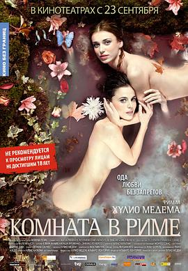

罗马的房子 / Habitación en Roma
又名：罗马欲乐园(台) / 罗马夜禁色(港) / 罗马的房间 / Room in Rome
Loving strangers.
作品信息
| 导演 | 胡里奥·密谭 |
| 编剧 | 胡里奥·罗哈斯 / 胡里奥·密谭 / 凯瑟琳·富盖特 |
| 主演 | 埃伦娜·安纳亚 / 娜塔莎·亚罗温科 / 恩里克·洛维索 / 纳瓦·尼姆利 / Ander Malles / Laura Meizoso |
| 类型 | 剧情 / 情色 / 同性 |
| 制片国家/地区 | 西班牙 |
| 语言 | 英语 / 西班牙语 / 意大利语 / 俄语 / 巴斯克语 |
| 上映日期 | 2010-04-24 |
| 片长 | 109 分钟 |
| IMDb | tt1263750 |
最后一次看到是 2026-08-12T21:13:25+08:00 · 豆瓣原页